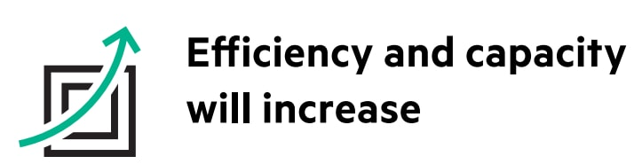

The Goal of DevOps
“Value can be delivered as early and as often as the business requires!”
The Approach
- Define shared performance metrics tied to business results
- Identify silos and collaboration barriers between teams
- Identify risks that hamper faster, more successful application roll outs
- Design feedback loops that are fast, early and actionable
- Implement automated tools throughout the software lifecycle to establish those feedback loops
Principles
- Iterative: Iterating toward a goal is a primary aspect of its design
- Continuous: Continuously optimizing implies that you are never "done"
- Collaborative: An agreement on the mission and the metrics
- Systemic: Remove as many constraints as possible within the IT delivery
- Automated: the technology framework must be designed for "human by exception," where as much work as possible is performed by programmatic means
Benefits: Speed
- More frequent deployments
- Faster deployments
- Lesser time for builds to go through the QA/UAT cycle
Benefits: Efficiency

- Eliminates waste and rework
- Lower Lead time and MTTR
Benefits: Quality
- Improved Deployment success rate
- Lower Incident/Defect volumes
- Improved Availability and Response Time
Tooling (IBM)